How to Set Up Git and Sublime Text for Version Control
Git
To me, Git is the ultimate version control tool for plaintext files. If you are a programmer, you should already be aware that Git is a free and open source distributed version control system. It was initially designed and developed by Linux Torvalds to use for the Linux kernel source code, so you know it has an amazing pedigree. Git is small, fast, reliable, and has dozens of software tools and web sites supporting it. It is also pretty simple to use, if, as in our case, we are just using a handful of its features.
Warning: Using Git for version control of plaintext files may be a little over-ambitious and unnecessary if you are already using Dropbox and/or Local History. I prefer Git because I use it for source code as well and appreciate its power, and its ability to push changes to a repository on a remote server for backup. Stop here and just use Local History and/or Dropbox if you do not need or want to use Git for your plaintext files.
If you want to jump into using Git for version control, here is how to do it.
Step 1: Install Git tools on Windows
Step 1.1: Install Git for Windows
First, download and install Git for Windows. This will install a suite of Git tools, primarily command-line tools, on your system. You will be using these tools in the later steps.
Step 1.2: Install SourceTree
Second, download and install SourceTree. SourceTree is a free GUI front-end to Git. It will show you your repository (which, for us, will be a directory full of text files), a graph of the revision history (or "commit" history) of that repository (which, for us, will be a straight line with a node for each revision), the files changed in each commit, and the diffs between the various revisions ("commits") of each file. This tool is useful for grabbing text from prior versions of your files.
Step 1.3: Install the Git package in Sublime Text
Third, use Sublime Text's Package Manager to install the "Git" package.
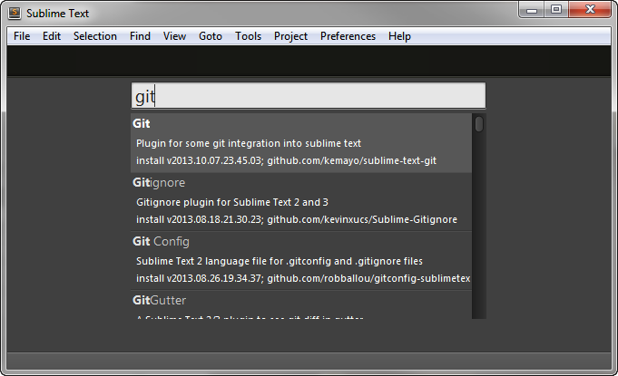
This package will add all manner of Git commands to Sublime Text's Command Palette (control+shift+p). The most important commands are "Git: Add", which stages the current file for committing, and "Git: Commit", which commits the staged files to the Git repository. Because all changes to a Git repository must be added to a "staging area" before they are committed, you must run "Git: Add" prior to running "Git: Commit" for the commit to work. The reason for staging the files isn't important if you are not a programmer, but you should know why committing to a Git repository isn't a one-step process.
Step 2: Create your Git repository
You can create your Git repository using either the command line or GUI.
<a name="gitcommandline"></a>
Option 1: command line
An easy way to create a Git repository is to use the command line. This is the only time I use the command line for Git.
Launch the command line by typing
cmd.exein the Start Menu's search box, or via the key commandwindows+r, and hittingenter.In the command line console, change to the folder you want the repository in. For me, this is my "@Drafts" folder
cd c:\Users\MyUserName\Documents\Docs\2013\@DraftsTo create the repository, type the following command and hit enter.
git initAt this point, you will have a blank Git repository stored in a ".git" subdirectory.
If you have existing files in your repository folder, commit them all with the following two commands:
git add . git commit -m "initial commit"
<a name="gitsourcetree" />
Option 2: using SourceTree
SourceTree can create a new Git repository for you within the safe confines of its graphical user interface. This is a good option for users averse to the command line.
In SourceTree, click on the Clone/New... toolbar button, or click File > Clone/New... in the menu.
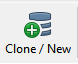
The "Clone / Add / Create Repository" dialog will appear. Click on the "Create New Repository" tab.
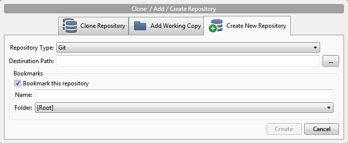
The "Respostory Type" should be set to "Git". Enter the "Destination Path" to your Sublime Text project folder. The bookmark name will be pre-filled with the name of the folder you select. Change it if you wish. (The bookmark is just a shortcut to the repository within SourceTree.) Click the "Create" button to create the repository.
At this point, SourceTree has created an empty Git repository in our folder. We still need to add our files to it. To do so, click the big "Commit" button in SourceTree's toolbar.
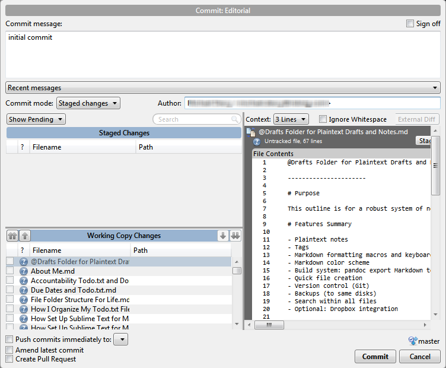
The "Commit" dialog will appear. The files in your repository folder will be listed at the bottom of the dialog. Type in a "Commit message" in the big text area up top. Then, click the double-arrow "Stage All" button in the "Working File Changes" heading (toward the bottom left of the dialog) to stage all your files for your initial commit. Then, click the "Commit" button on the lower right of the dialog. SourceTree will then commit all your files into the repository.
Step 3: Using Git in Sublime Text
Once you've installed the "Git" package on Sublime Text (see my article on that), Sublime Text will be aware that files are in Git repositories.
Committing files to Git
To commit a file to Git in Sublime Text is a three-step process.
Use the Command Palette to issue the "Git: Add" command, which stages the current file for committing.
Use the Command Palette to issue the "Git: Commit" command, which will commit the staged file(s) to the repository, once you enter a commit message.
A new tab will open in the editor. You should type in a commit message (just a short note about the version being committed) and then close the tab (
control+w). The file will be committed to the Git repository and tagged with the message you typed in.
Viewing diffs
Diffs show the differences between two versions of the same file, or, in Git-speak, the current file and a prior commit. Lines added since the last commit are prefaced with a "+", while lines removed are prefaced with a "-". For writing, this will show you the old version and the new version, stacked on top of each other.
Option 1: Sublime Text Git plugin
Sublime Text's Git package offers several useful diff options, all available from the Command Palette (control+shift+p).
- "Git: Diff Current File", which presents a diff of the current file and the last commit
- "Git: Diff All", which presents a diff of all files in your repository the last commit.
- "Git: Diff Staged", which presents a diff of all files you have staged (with the "Git: Add" command, for instance) for your next commit.
The diff will open up in a new file tab within Sublime Text. What's nice is that there is syntax highlighting which helps you identify the additions and deletions. When you are done reviewing the diff, just close the tab and it is gone.
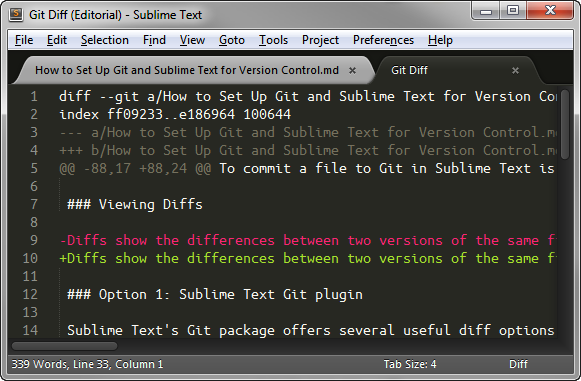
Option 2: SourceTree
You can also view diffs when browsing your repository in SourceTree. First, select a file in the lower left pane of the window. Then, the diffs will show up in the lower right-hand page of the window. Additions and deletions are highlighted in green and red to help you differentiate them.
Step 4: Automating Git commits
Programmers want to control when they commit changes to their git repository for many reasons, primary because it is poor practice to commit source code that does not compile. Plaintext notes, however, don't have to compile, so there's no harm committing intermediate states of work.
Because committing changes to a Git repository is a 3-step process, to make things easier, I wrote a script to automatically commit all my notes on an hourly basis to my notes repository. It is kicked off by Windows Scheduled Tasks and runs under my user account.
Set WinScriptHost = CreateObject("WScript.Shell")
WinScriptHost.CurrentDirectory = "C:\Users\MyUserName\Documents\Docs\@Archive\2013\@Drafts"
Return = WinScriptHost.Run("git add .", 0, true)
Return = WinScriptHost.Run("git commit -a -m ""Automated commit by git-commit-drafts.vbs on " & _
FormatDateTime(Now(), 2) & " at " & FormatDateTime(Now(), 3) & ".", 0, true)
Set WinScriptHost = NothingMy script is a VBScript, rather than a simple batch file, for one reason: When you call a batch file with Windows Scheduled Tasks, a black command prompt window appears, if only for a split second, which is inelegant and annoying. That doesn't happen when you call a VBScript.
To set up Windows to run this script hourly, do the following:
Create the script file. You can download my copy. Make sure the file extension is .vbs; rename the file if you have to. Save the file to the root of your home directory or to your Documents folder. (Its location doesn't matter, but you need to know where it is.)
Hit the
windowskey to bring up the Start menu. Begin typing "schedule task" and select the command "Task Scheduler" or "Schedule tasks".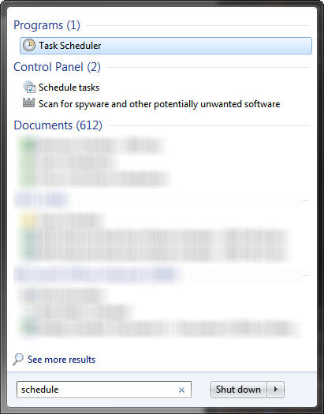
The Task Scheduler will appear. Click the "Create Task" in the right sidebar.
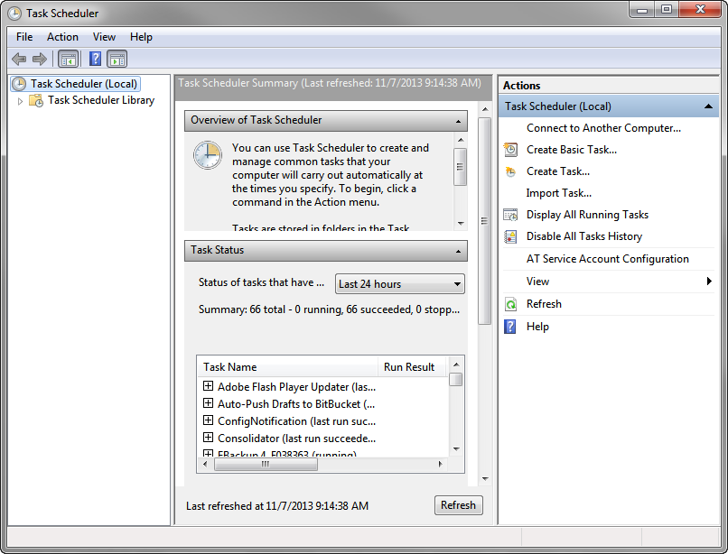
The "Create Task" window will appear. Now we will fill out the various parts of a multi-tab form.
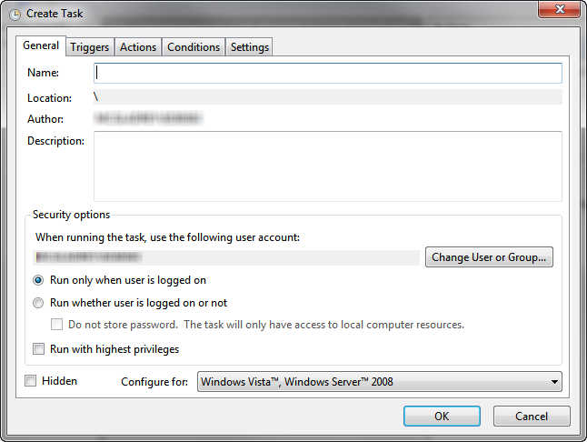
Fill out the "General" tab by adding a name and description to the task.
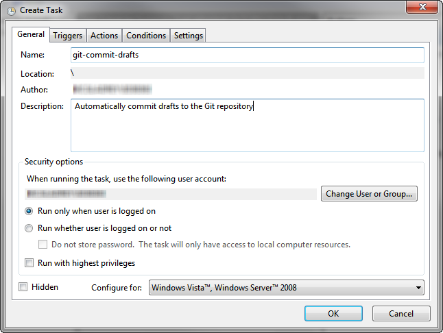
Click on the "Triggers" tab. This is where we will establish the hourly schedule to execute our script.
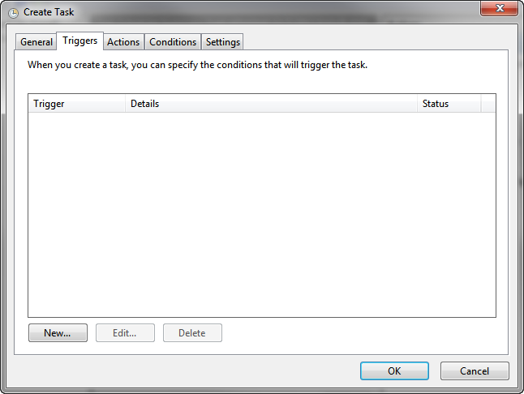
Click the "New..." button on the "Triggers" tab. This will bring up the "Edit Trigger" menu. Fill out the "Edit Trigger" tab as follows: Begin the task "On a schedule"; Daily; Set the start time to an on-the-hour time; Recur every 1 days; and, under Advanced settings, "Repeat task every" 1 hour for a duration of 1 day. Make sure the "Enabled" checkbox at the bottom of the form is checked.
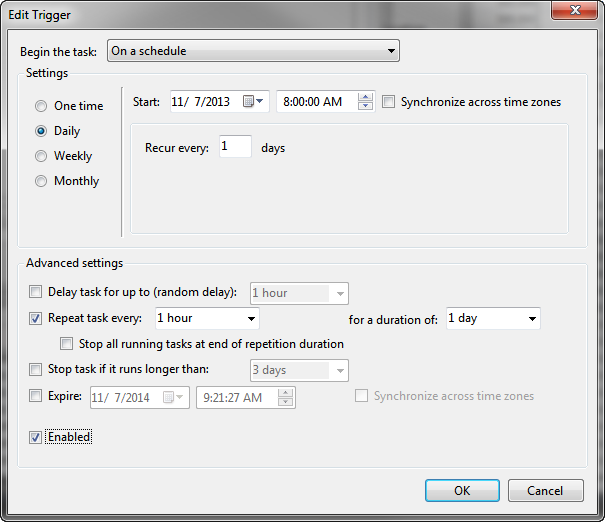
Click on the "Actions" tab. This is where we will set the command to run on the schedule we set in the prior step.
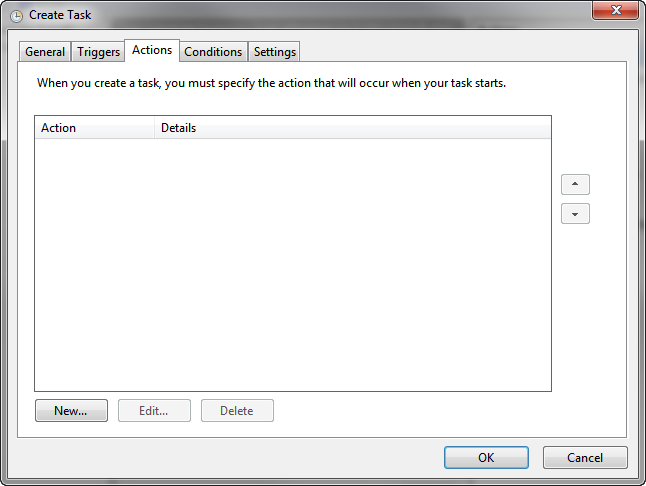
Click the "New..." button on the "Actions" tab. This will bring up the "New Action" window. Fill in the "Program/script" with the full file path to the VBSCript file you saved in step 1. Then click the "OK" button.
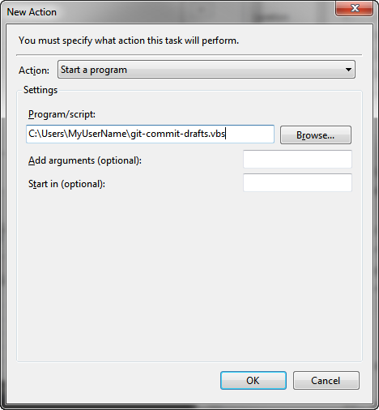
You will be returned to the "Actions" tab, and you will see your new action in the list.
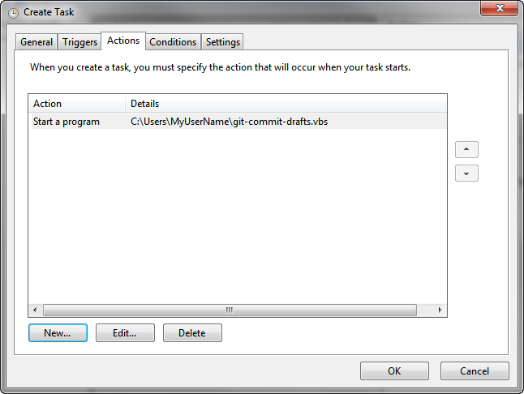
Click on the "Conditions" tab. Under "Power" settings, uncheck "Start the task only if the computer is on AC power". We want this task to run even if we are on battery power. Click the "OK" button.

Finally, click the "OK" button at the bottom of the "Create" task window. The task will be created, will execute on the schedule you set, and will be present in the task list within the "Task Scheduler" window. You can close the Task Scheduler now.
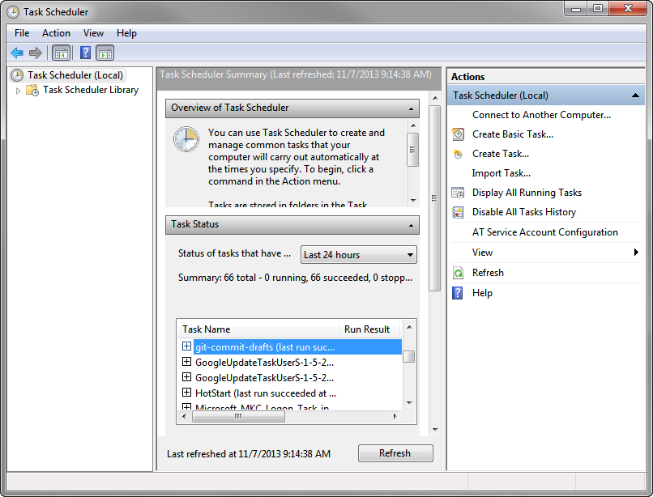
Step 5: Automating Git pushes to a remote repository
Because Git is a distributed version control system, you can set up a remote repository to push your repository changes to remotely-hosted Git repository on your intranet or the Internet. You can use this feature as a really fancy backup system for your notes and drafts repository.
Detailed step-by-step instructions to set all this up are beyond the scope of this article, because they may differ depending on where your remote repository is hosted. If, in addition to writing at work, you also do programming, you also may want to do set up a remote repository because it works with your programming workflow. If you aren't a programmer or don't have anywhere to push your repository to, you can just back up your Git repository like any other file folder.
In general, for a Git push, you have to set up a repository on an online service, such as BitBucket (which is is great for free, private, single-user repositories). If you use BitBucket for this, follow their instructions to configure everything. You have to configure the remote repository address in your repository (git remote add [shortname] [url], or edit the "Repository Settings" in SourceTree). You will also have to set up SSH keys to transfer the files securely without entering a password each time.
This is a script that will push your Git repository to a remote server (git-push-origin-master.vbs):
Set WinScriptHost = CreateObject("WScript.Shell")
WinScriptHost.CurrentDirectory = "C:\Users\MyUserName\Documents\Docs\@Archive\2013\@Drafts"
Return = WinScriptHost.Run("git push -u origin master", 0, true)
Set WinScriptHost = NothingYou can schedule this script to run regularly in Windows Scheduled Tasks. See the instructions above for scheduling commits, and set the "Action" to the "push" script, and set the schedule to "daily".